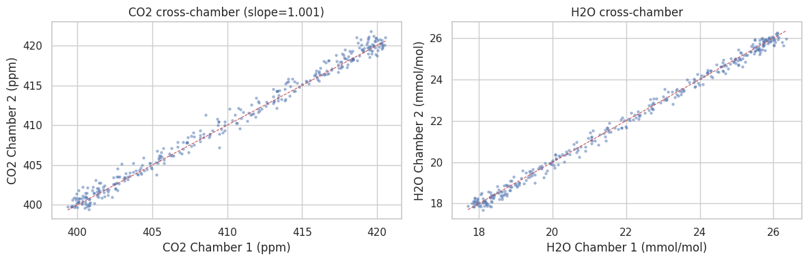

025 — Cross-chamber bias comparison (diagnostic)#
Compare CO2 / H2O / temperature time series between chambers C1 and C2 to detect systematic between-chamber bias (sensor calibration drift, analyzer differences, mechanical seal differences). Output is diagnostic only — no corrected data is exported. Bias correction cannot distinguish drift from biology.
Runs on the bundled synthetic sample.
import pandas as pd
import matplotlib.pyplot as plt
from palmwtc.config import DataPaths
from palmwtc.viz import set_style
set_style()
paths = DataPaths.resolve()
print(paths.describe())
DataPaths (source=sample (bundled synthetic), site=libz):
raw_dir = /home/runner/work/palmwtc/palmwtc/src/palmwtc/data/sample/synthetic
processed_dir = /home/runner/work/palmwtc/palmwtc/src/palmwtc/data/sample/Data/Integrated_QC_Data
exports_dir = /home/runner/work/palmwtc/palmwtc/src/palmwtc/data/sample/exports
config_dir = /home/runner/work/palmwtc/palmwtc/src/palmwtc/data/sample/config
extras = <none>
qc_path = paths.raw_dir / "QC_Flagged_Data_synthetic.parquet"
df = pd.read_parquet(qc_path, columns=["TIMESTAMP", "CO2_C1", "CO2_C2", "H2O_C1", "H2O_C2"])
df = df.dropna(subset=["CO2_C1", "CO2_C2"]).iloc[::60] # sample to 30-min cadence
print(f"{len(df)} comparison rows")
335 comparison rows
fig, axes = plt.subplots(1, 2, figsize=(12, 4))
axes[0].scatter(df["CO2_C1"], df["CO2_C2"], s=5, alpha=0.4)
axes[0].plot([df["CO2_C1"].min(), df["CO2_C1"].max()], [df["CO2_C1"].min(), df["CO2_C1"].max()], "r--", lw=0.8)
axes[0].set_xlabel("CO2 Chamber 1 (ppm)")
axes[0].set_ylabel("CO2 Chamber 2 (ppm)")
axes[0].set_title(f"CO2 cross-chamber (slope={(df['CO2_C2'] / df['CO2_C1']).median():.3f})")
axes[1].scatter(df["H2O_C1"], df["H2O_C2"], s=5, alpha=0.4)
axes[1].plot([df["H2O_C1"].min(), df["H2O_C1"].max()], [df["H2O_C1"].min(), df["H2O_C1"].max()], "r--", lw=0.8)
axes[1].set_xlabel("H2O Chamber 1 (mmol/mol)")
axes[1].set_ylabel("H2O Chamber 2 (mmol/mol)")
axes[1].set_title("H2O cross-chamber")
plt.tight_layout()
plt.show()

On real data, persistent off-diagonal scatter (slope != 1, large RMSE)
flags between-chamber bias. A flagged window can then be added to
config/sensor_exclusions.yaml for follow-up investigation.